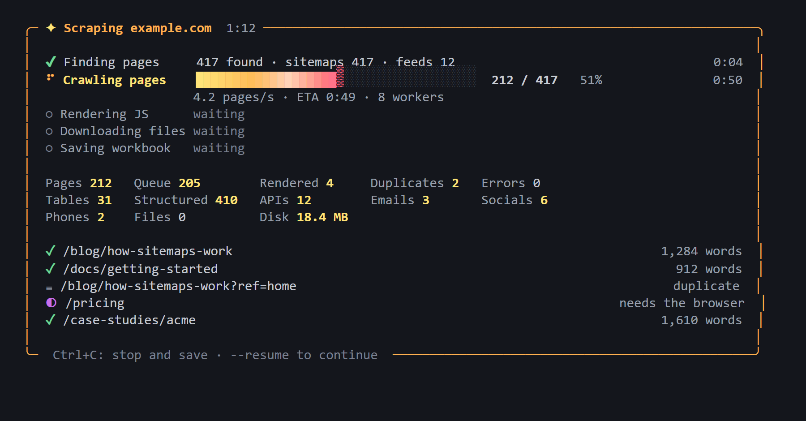

What it does
One command crawls a site from top to bottom, keeps only the real content, and saves it in formats you can open straight away.
Finds every page
Reads sitemaps and RSS feeds, then follows links, pagination and language versions.
JavaScript sites too
Pages that arrive empty are rendered in Edge or Chrome, and the JSON they load is saved.
Clean text
Main content only. Menus, footers, duplicate pages and "not found" pages are removed.
Tables and structured data
Every data table as CSV, plus products, articles, FAQs, events and contact details.
Built for big sites
SQLite state, resume after stopping, time, size and file limits, and crawler-trap protection.
Polite and safe
Honours robots.txt and rate limits, and stops when a site says no. Scraped content can't harm your PC.
Watch it work
A live dashboard shows each step with progress bars, speed, time left and the latest pages.

The dashboard during a crawl. It falls back to plain progress lines when output is redirected.
Quick start
Requires Python 3.10 or newer. JavaScript pages use the Edge or Chrome you already have.
git clone https://github.com/AmonHooriLal/Site-Scraper-Main.git
cd Site-Scraper-Main
pip install -e ".[full]"
site-scraper https://example.com# a few useful options
site-scraper https://example.com --max-pages 20000 # bigger sites
site-scraper https://example.com --sections blog,docs # only some sections
site-scraper https://example.com --max-time 30m # time-boxed
site-scraper https://example.com --resume # continue laterWhat you get
Everything lands in one dated folder, <site> Data YYYY-MM-DD.
| File / folder | Contents |
|---|---|
<site> Content.xlsx | Summary, all pages, a sheet per section and per structured-data type, tables, contacts, files and failures |
pages.jsonl | One record per page: title, URL, date, author, tags, body (Markdown), headings, images, tables, structured data |
markdown/ | One readable file per page, grouped by section |
tables/ · structured/ | Every data table as CSV; Schema.org records such as products, articles, FAQs and events |
api/ | JSON the site's pages loaded, plus embedded app state |
documents/ · images/ | Downloaded files, with PDF text also saved as Markdown |
contacts.json | Emails, phone numbers, social profiles and addresses, with the pages they came from |
Responsible use
- For public content you're allowed to use. Check each site's terms, and prefer an official API when one exists.
- It follows robots.txt and rate-limits itself. When a site refuses access, it records that and stops. It never works around logins, captchas or bot protection.
- If you keep the emails or phone numbers it collects, privacy laws such as the GDPR and India's DPDP Act apply.
--no-contactsturns collection off.